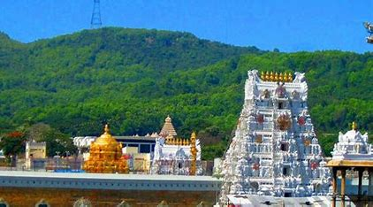
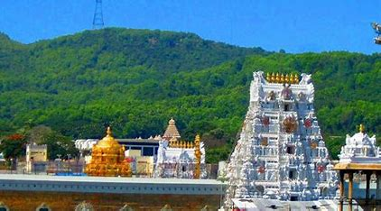
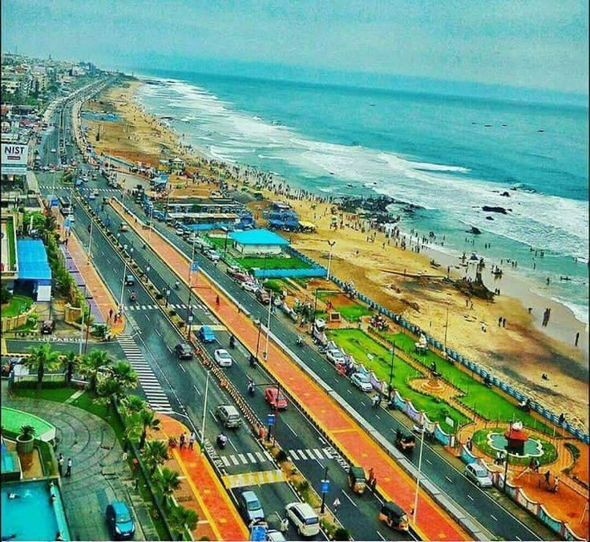
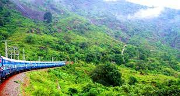

Exploring the Spiritual Marvel - Tirupathi Balaji Temple
October 2, 2023
Discover the divine aura and intricate architecture of Tirupathi Balaji Temple, a spiritual landmark in Andhra Pradesh, drawing millions of devotees annually.
Read MoreOctober 2, 2023
Discover the divine aura and intricate architecture of Tirupathi Balaji Temple, a spiritual landmark in Andhra Pradesh, drawing millions of devotees annually.
Read MoreApril 5, 2024
Immerse yourself in the serene beauty of Ramakrishna Beach in Visakhapatnam, where golden sands meet the Bay of Bengal, offering a perfect blend of tranquility and coastal charm.
Read MoreJanuary 7, 2024
Embark on a fascinating exploration of Sri Harikota Rocket Space Centre, the hub of India's space endeavors, witnessing cutting-edge technology and space missions.
Read MoreJanuary 26, 2024
Escape to the picturesque landscapes of Araku Valley in Visakhapatnam, surrounded by lush greenery, coffee plantations, and tribal culture, making it a perfect retreat for nature enthusiasts.
Read More